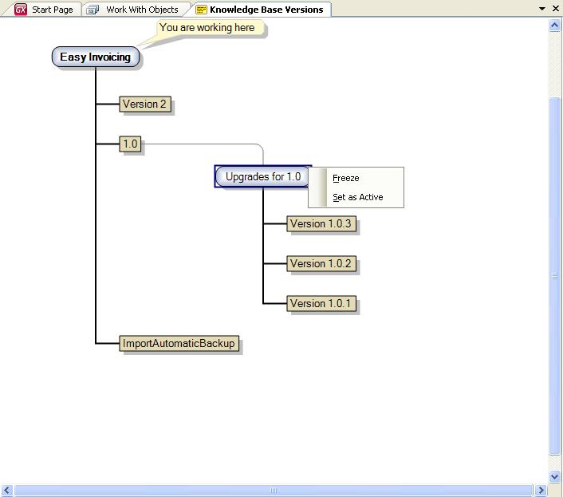

In GeneXus, a Development Version is what in Software Configuration Management (SCM) is called a Branch, identifying with this term, the existence of different development lines. One of the most common situations for using development versions is when there is a need to continue with the application's evolution (usually in the Trunk) while making maintenance fixes to an application in production (in a Development Version). What you need is that changes to either of them do not interfere with the other. 
|